Uma capivara adulta pode ser quase do tamanho de uma criança de 6 a 8 anos.
Peso
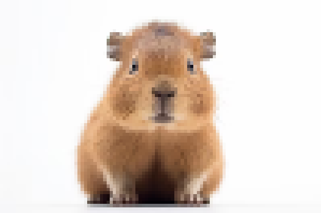
A capivara pode pesar entre 35 e 65 quilos, equivalente a carregar quatro ou cinco mochilas cheias de livros.
Alimentação
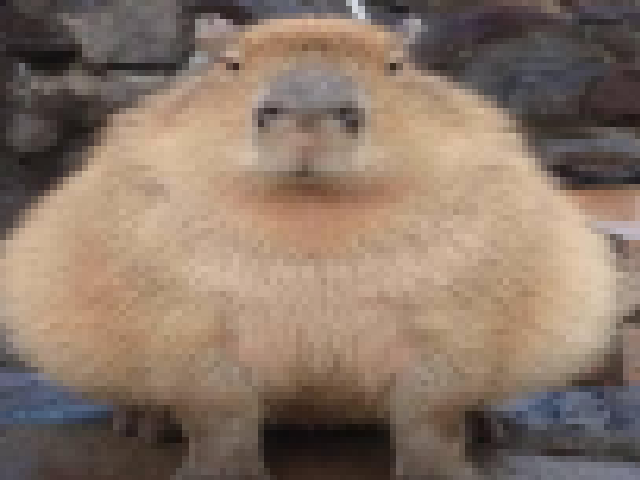
As capivaras são herbívoros que se alimentam principalmente de plantas, incluindo capim, folhas e plantas aquáticas como a alface d'água.
Habitat
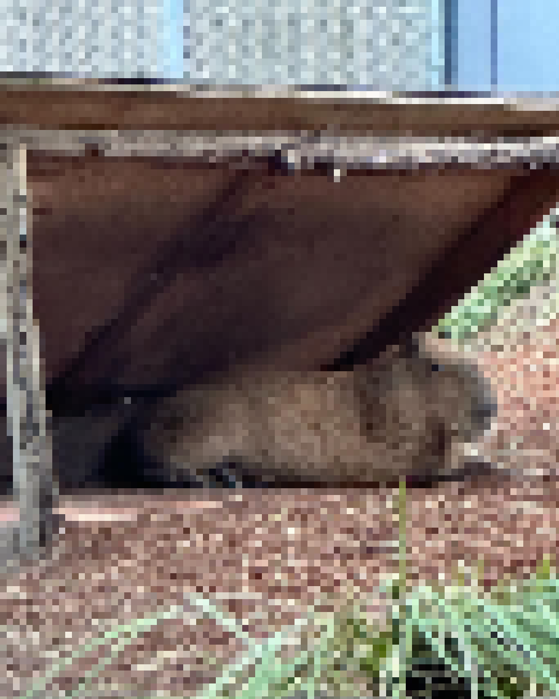
As capivaras preferem viver perto da água em ambientes como rios, lagos e pântanos, onde podem nadar e se refrescar.
Comportamento
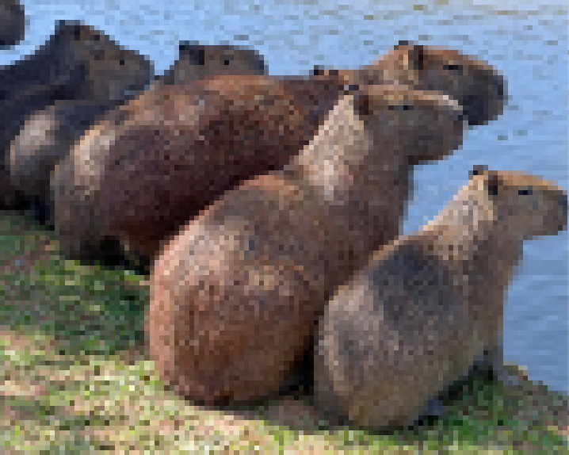
As capivaras são amigáveis, vivem em grandes grupos, emitem sons engraçados quando felizes e são ótimas nadadoras.
Maternidade
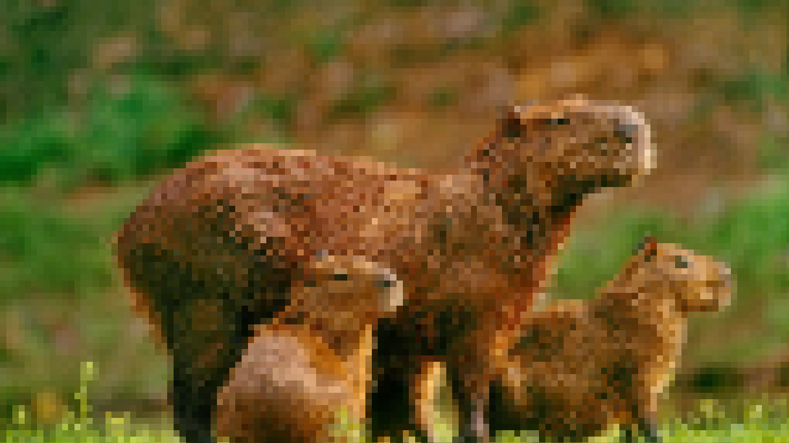
As mamães capivaras são "amas de leite" que cuidam dos filhotes umas das outras.
Natação
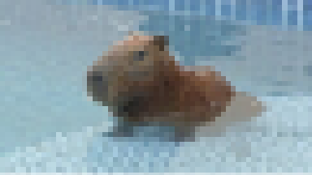
As capivaras nadam e ajudam a misturar a água, mantendo-a limpa e cheia de ar para os peixes respirarem.
Fertilidade
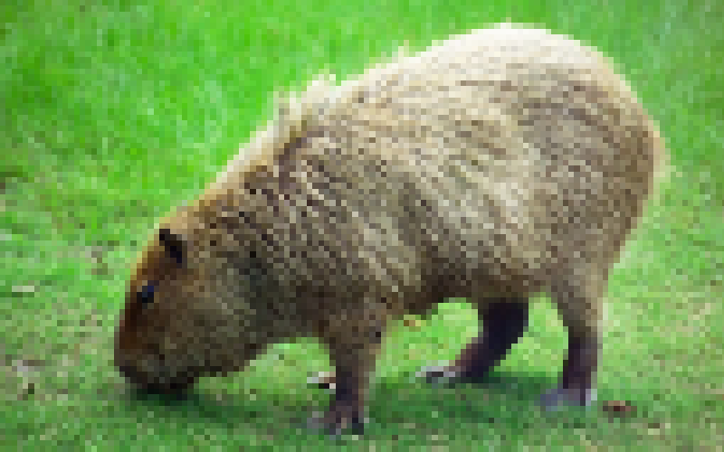
As capivaras também ajudam a fertilizar o solo. Quando elas fazem cocô na terra perto do rio, esse cocô funciona como um adubo natural.
Caminhos
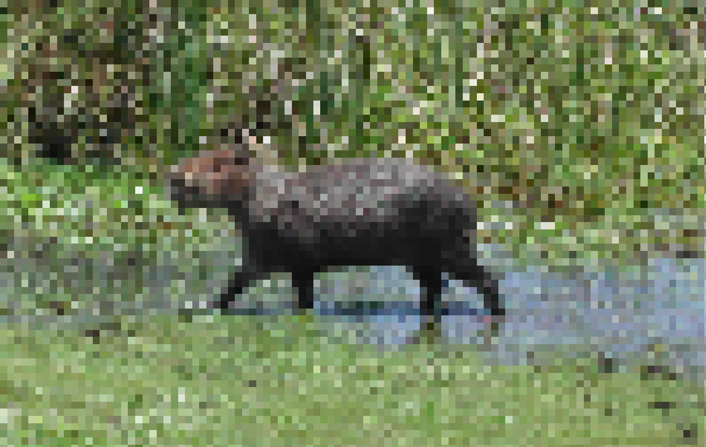
Quando as capivaras se movem nos matos ou rio, criam caminhos que beneficiam outros animais menores ao facilitar o acesso a comida e abrigo.
Benefício para Pássaros
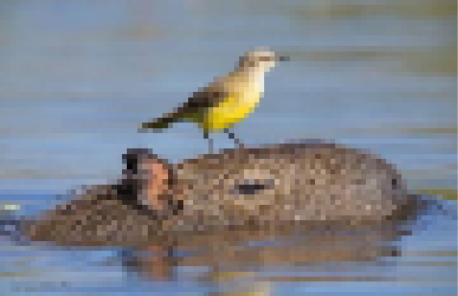
Os pássaros se beneficiam ao comer insetos das capivaras, enquanto as capivaras se livram da sujeira entre seus pelos.
Pastoreio
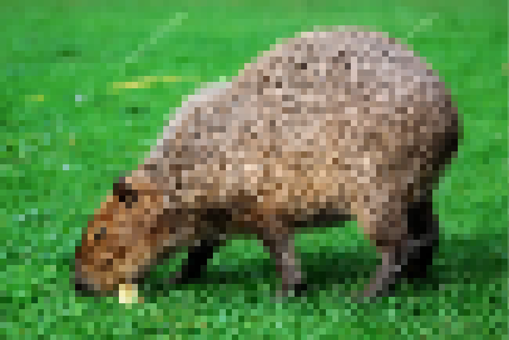
Quando as capivaras pastam, expõem insetos escondidos na grama, beneficiando pássaros na busca de alimentos.
Aquecimento
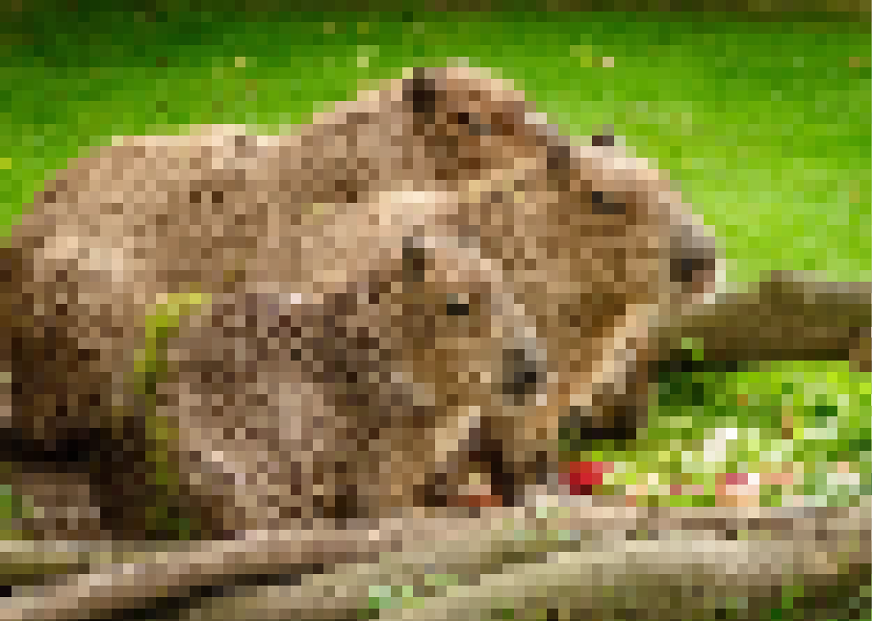
As capivaras são animais de sangue quente e mantêm os animais ao seu redor aquecidos durante o inverno rigoroso.
Riscos Urbanos
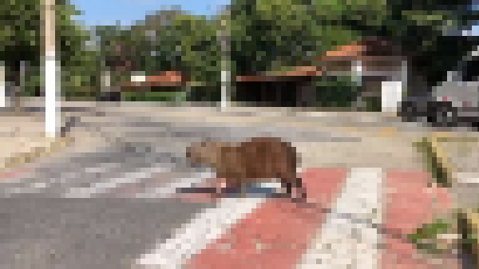
Nas cidades, as capivaras podem entrar em contato com lixo e esgoto, que podem estar sujos e cheios de germes. Isso pode deixar as capivaras doentes e também as pessoas que vivem perto.
Sustentabilidade
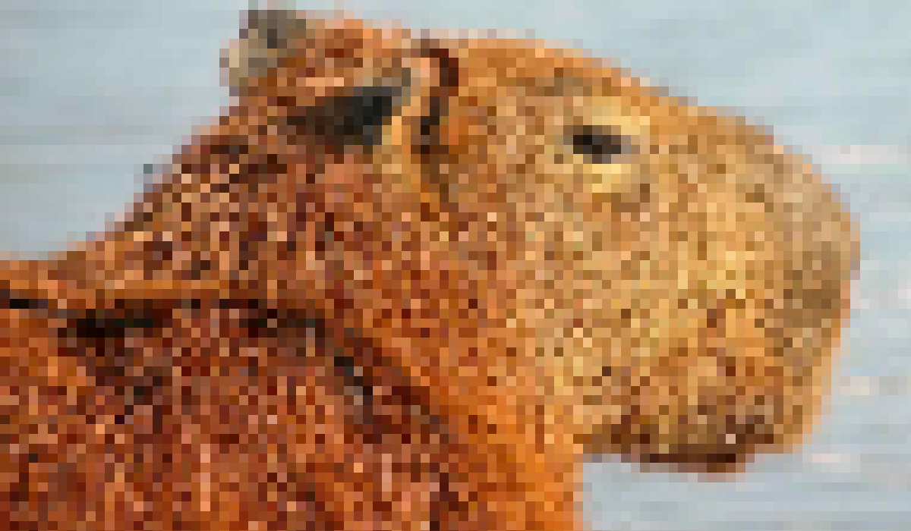
Cuidar das capivaras é essencial para manter a sustentabilidade e o equilíbrio ecológico da nossa cidade.